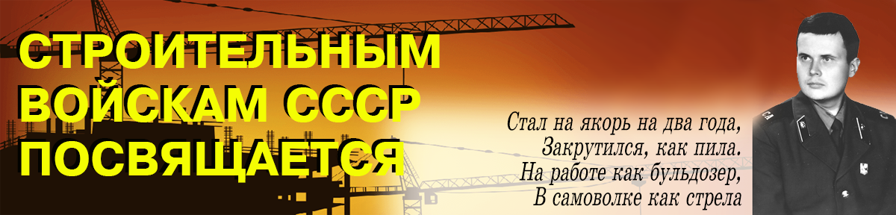
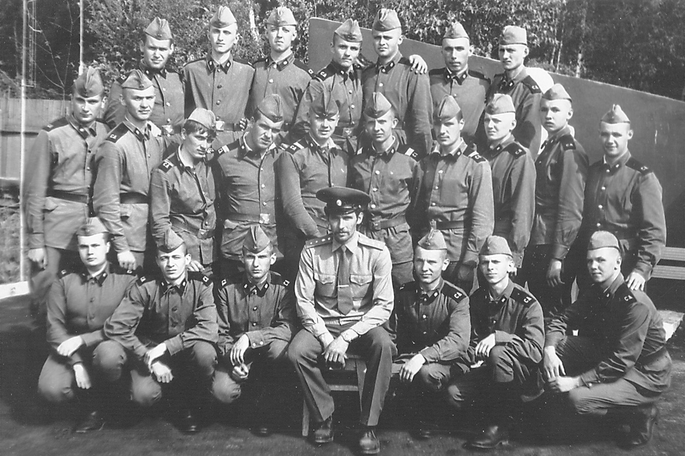

Стеценко Сергей Александрович, в/ч 01240.
Годы службы 1986-1988, г.Руза
КТО НЕ БЫЛ - ТОТ БУДЕТ,
КТО БЫЛ - НЕ ЗАБУДЕТ

...Этот «счастливый» день настал. С вещами, многие уже со стрижкой «под ноль», зашли на территорию облвоенкомата, и железные ворота бесповоротно закрылись. Областная медицинская комиссия еще раз бегло провела осмотр будущих бойцов Советской Армии, поставив на все личные дела штемпель «Годен», хотя это была просто стандартная процедура и здоровье призывников никого не интересовало.
Читайте всю историю
Читайте всю историю